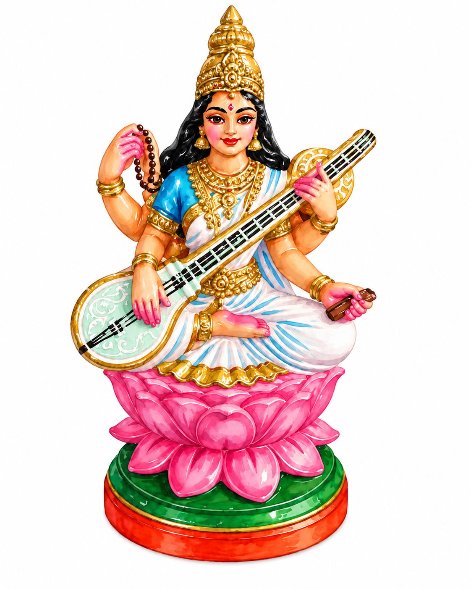

Saraswati: The Goddess of Knowledge, Music, and the Arts

Saraswati
Saraswati is the Hindu goddess of knowledge, wisdom, learning, music, and the arts. She's particularly popular with students, teachers, musicians, and anyone else whose livelihood depends on their brain cooperating with them. Before exams, performances, or the beginning of a new course of study, it's common to seek her blessings.
Saraswati is usually depicted dressed in white, seated on a lotus, and holding a veena (a traditional Indian stringed instrument). Almost everything about her appearance is symbolic. Her white clothing represents purity of thought, the veena represents the arts and the harmony between knowledge and creativity, and the books she sometimes holds represent learning. She's also associated with a swan, which, according to Hindu tradition, has the mythical ability to separate milk from water — a rather unusual talent, but one meant to represent viveka, or the ability to distinguish truth from falsehood and wisdom from ignorance.
Vidyarambham
One particularly interesting tradition associated with Saraswati is Vidyarambham (Vidhya = knowledge, Arambham = beginning), a ceremony in which young children are formally introduced to learning. Often celebrated during Vijayadashami (the final day of Navaratri, the festival we are currently celebrating), children write their first letters, sometimes tracing them in rice, they start their singing/dancing classes, etc. all while seeking Saraswati's blessings. The underlying idea is that knowledge is something worth celebrating, and learning is a lifelong pursuit.